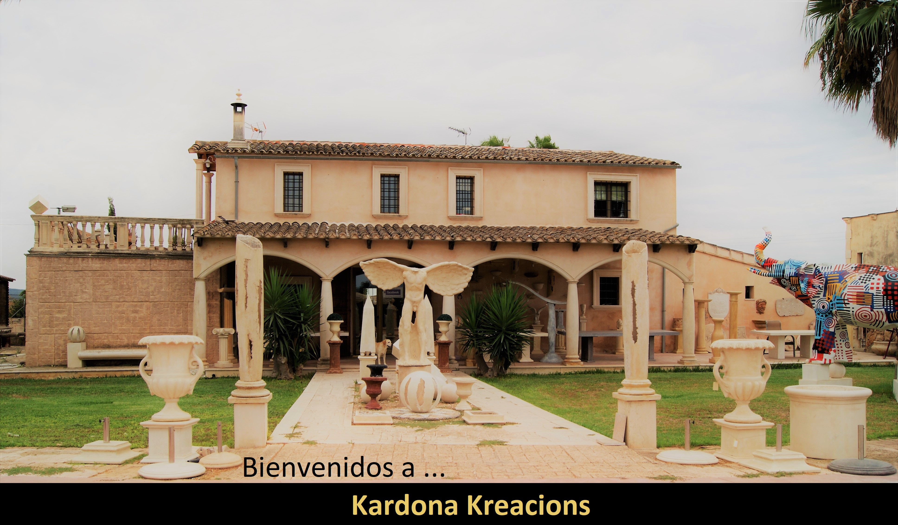
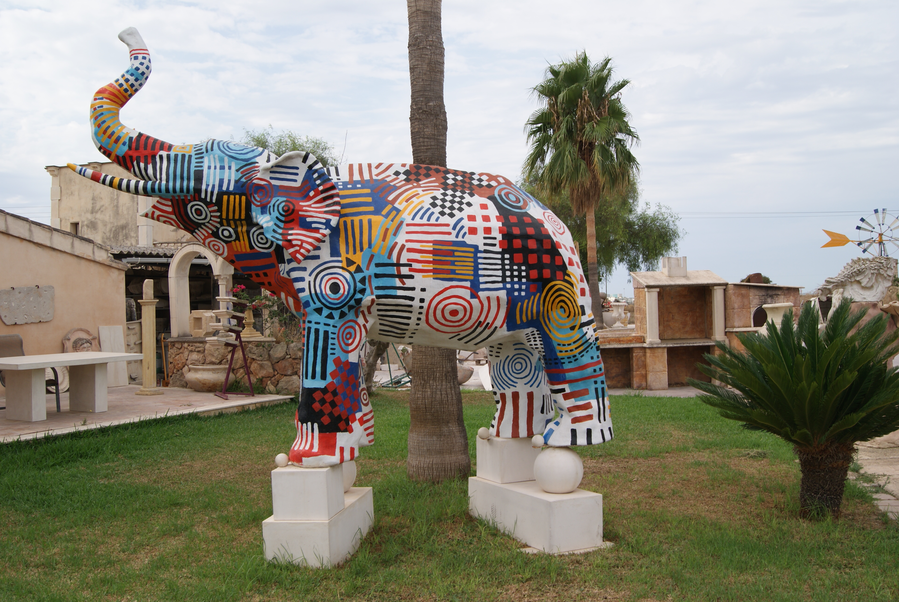

¿Quiénes Somos?
Sobre nosotros
Somos una empresa artesanal, desde el año 1992. Llevamos haciendo realidad las ideas de nuestros clientes, fabricando sus proyectos, personalizados en cuanto a medidas, colores, texturas y acabados.
A lo largo de estos años los hemos asesorado, para crear los ambientes deseados por ellos en porches, terrazas, jardines...
Hemos ayudado y colaborado con arquitectos, decoradores, paisajistas fabricando las piezas diseñadas por ellos y así ver construidas sus ideas.
.jpg)

Nuestro trabajo, convertir su diseño en realidad
Todas las piezas están fabricadas en Mallorca, punto de inspiración para nuestra creatividad. el material empleado es un compuesto de piedra de la isla y cemento, para conservar el acabado de las piezas, dándole un estilo más moderno.
Desde pequeños diseños a grandes proyectos, intentamos conseguir la satisfacción de nuestros clientes, con un trato amable y personalizado, dando forma a sus ideas hasta que las disfrute en su hogar o jardín.

Nuestra evolución
Nuestra formación es autodidacta. A lo largo de nuestro camino hemos recibido los conocimientos de grandes y afamados profesionales del sector. A todas ellas les damos las gracias por su ayuda.
"GRACIAS" a nuestros clientes por sus grandes ideas y proyectos por ayudarnos a seguir creciendo, con el paso de los años.
Atentamente,
Juan Cardona